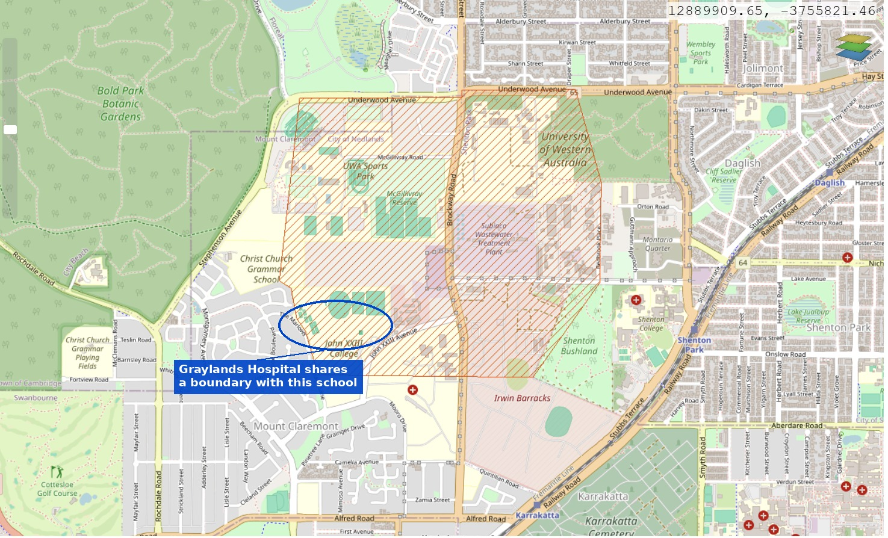

The buffer question nobody's answered
This isn't about whether the site smells bad. It's about a specific line in the City of Nedlands' own planning scheme, a specific admission in the government's own business-case review, and a specific question that's been asked once in Parliament and never really answered since.
This is a technical page, deliberately. It won't move you the way a photo of a school fence does. That's the point — it's aimed at planners, journalists and parliamentarians as much as neighbours, because a live statutory compliance question is a different kind of pressure on this project than a community objection is. Last built: 5 September 2026.
What the law actually says
The City of Nedlands' Local Planning Scheme No. 3 designates a mapped Special Control Area over the land around the Subiaco Wastewater Treatment Plant — Special Control Area 1, the "Subiaco Strategic Water Resource Precinct." Its stated purpose is "orderly and proper planning" around the plant; one of its objectives is explicitly "to prevent the introduction and intensification of land uses or development which would be incompatible with" the plant's ongoing operation and expansion.
"No residential or other sensitive land uses as defined by EPA Guidance Statement No. 3 (Separation Distances Between Industrial and Sensitive Land Uses, June 2005) are to be located in the Subiaco Waste Water Treatment Plant odour buffer."
Verified directly against the current scheme text (as amended, gazetted to Feb 2026). Source: City of Nedlands LPS 3, cl.36 & Table 7
EPA Guidance Statement No. 3 defines "sensitive land uses" to include residential development, schools, nursing homes, child care — and hospitals, expressly. The same scheme separately requires the local government, before approving any development, scheme amendment, structure plan or local development plan in this precinct, to have regard to Water Corporation and environmental regulator advice on odour impact — and requires a current odour-modelling technical report to confirm the buffer's boundaries wherever one of those planning instruments is involved.
Put plainly: this isn't a guideline a proponent can weigh up and move past with a good enough report. It's a rule that says the use isn't to be located there, sitting inside a scheme that separately spells out exactly what evidence is meant to inform any decision that touches the area.

This map doesn't carry a "Graylands Hospital" label at this zoom level — the connection above is ours, drawn from the two sites sharing a boundary, not a claim printed on the source map itself.
Why "Frankland's already there" doesn't answer this
The obvious response is that a secure forensic unit has operated at Graylands since 1993, and the sky hasn't fallen. That's true, and it's also not really an answer — because the Frankland Centre and the proposed new build sit under two different legal tests.
Frankland Centre, 1993
LPS3 protects "the continued use of any land... for the purpose for which it was being lawfully used immediately before the commencement of this Scheme." Frankland predates SCA1 (gazetted 2019) by 26 years. If it was lawfully established — and the available record suggests it was, under the more permissive planning regime of the time — the modern scheme doesn't retrospectively switch it off. That's an ordinary, unremarkable non-conforming-use protection.
The 2026 forensic campus
The same scheme says a person "must not, without development approval... alter or extend a non-conforming use of land." Grandfathering protects continuation. It doesn't pre-clear intensification. A new, larger, differently-configured forensic campus is a fresh question under SCA1 — not something the 1993 building answers on its behalf.
Source for both: City of Nedlands LPS 3, cl.22 & cl.23
What the government has already admitted
None of this is a theory we've constructed from a zoning map. The government's own paper trail already puts the site inside the buffer and treats that as a live, unresolved problem.
What's missing
Two things the government's own paperwork says should exist — a genuine environmental accounting of the buffer, and a planning approval process — don't show up where you'd expect to find them.
The federal environmental referral doesn't mention it
We checked. The State's own EPBC referral for this exact project — the document that walks through heritage, vegetation, black-cockatoo habitat and construction impacts at length — contains zero mentions of "odour" and zero mentions of "wastewater" anywhere in its 48 pages. It discusses the site's "Public Purposes – Hospital" reservation under both the Metropolitan Region Scheme and LPS3, but not LPS3's separate SCA1 restriction on sensitive uses in the buffer.
To be fair to the document: an EPBC referral serves a Commonwealth environmental purpose, not a State planning one, so this isn't necessarily an omission it was required to fix. But it means the referral's claim of being "consistent with the current reservation and zoning status" answers the hospital-reservation question and doesn't touch the odour-buffer question at all.
Verified directly against the referral document (EPBC 2025-10271), not taken on trust from a summary.
The local planning authority says it has received nothing
Asked directly by this community, in writing, whether it had received "any development application, public works referral, WAPC referral, heritage material, traffic assessment, environmental material or other planning document" for this project, the City of Nedlands' answer — dated 17 July 2026 — was:
"No - only the Summary assessment report as attached."
That's a direct quote from the Mayor's own written reply, already published on our Correspondence page. It means that as of that date, none of the documents that would ordinarily carry a buffer/odour assessment through the statutory planning process had reached the authority responsible for assessing exactly that.
What we're asking to see
We're not alleging the project is unlawful. We don't have the documents that would let anyone say that either way — which is exactly the problem. These are the specific records that would settle it, one way or the other:
- The sections of the Cabinet-approved Project Definition Plan dealing with the Subiaco WWTP odour buffer, SCA1 and planning approval pathway.
- Any current odour-modelling technical report commissioned for this project.
- Water Corporation's and DWER's formal advice on locating this specific development within the buffer.
- Confirmation of whether a development application has now been lodged with the City of Nedlands / WAPC, and its status.
- Whichever legal mechanism — public-works exemption, buffer reduction, or a standard SCA1 approval pathway — the government considers resolves the SCA1 restriction for this project.
This maps directly onto our FOI programme and the next round of Questions on Notice. If the answer to all five is straightforward, publishing it costs the government nothing and ends this page's argument in a paragraph. If it isn't straightforward, that's the story.
A statutory planning restriction that hasn't been publicly shown to be resolved is exactly the kind of thing a proper consultation and publication process exists to catch before it becomes irreversible.
Sign the petition